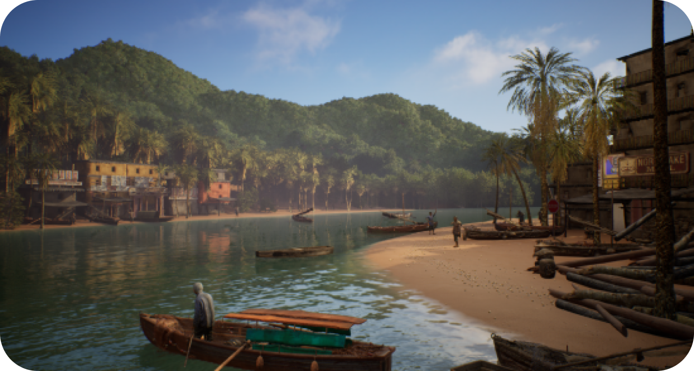

1876年的洋务学子与2025年的艺术留学经历，在英国的地点、声音和图像中相遇。这部影像把个人经验放进更长的通信历史，也追问技术如何改变我们感知世界的方式。
我独立推进研究、英国与欧洲多地拍摄、剪辑与后期，完成24分钟影像。胶片、投影与技术实验，也参与了这次对模拟媒介的追问。

As Fables Go By
从通信历史出发，
写给模拟时代的一封信。
作品导读
1876年的洋务学子与2025年的艺术留学经历，在英国的地点、声音和图像中相遇。这部影像把个人经验放进更长的通信历史，也追问技术如何改变我们感知世界的方式。
我独立推进研究、英国与欧洲多地拍摄、剪辑与后期，完成24分钟影像。胶片、投影与技术实验，也参与了这次对模拟媒介的追问。
Remote Fantasy

我把研究线索转成虚拟场景与交互形式，让关于数字媒介和地缘关系的叙事，从图像延伸到空间。项目结合三维建模、Unreal Engine与Arduino，探索不同媒介如何共同构成一个叙事。
洋务运动员 / AI Content Workflow
我把资料研究、AI辅助草拟、选图和版式制作接入同一流程。选题、校订与最终发布仍由人工决定，成品则可以继续修改与归档。

我在西安美术学院学习数字媒体艺术，后进入英国皇家艺术学院学习当代艺术实践。创作从摄影、影像延伸到交互与生成工具，也持续受到艺术史、媒介研究与日常经验的影响。
我习惯从资料和现场出发，再通过拍摄、剪辑与技术实验完成表达。现在也在实践AI辅助内容生产，关注生成结果如何经过选择和修订，成为完整的视觉作品。
影像与后期：Premiere Pro、After Effects、Photoshop。
相关技术实践：TouchDesigner、WebGL / Three.js、Unreal Engine、Arduino。
内容与原型：LLM辅助工作流、AI图像、Vibe Coding。
计划通过一个30–60秒案例，记录分镜、生成一致性与人工后期。目前尚未完成成片。
欢迎联系影像、AI视觉内容、创意技术与游戏创意内容相关的工作或合作。
yihuangart09@gmail.com ↗